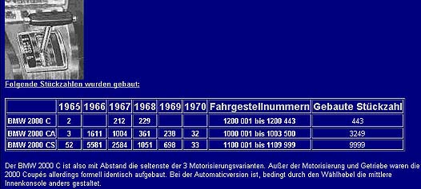

Understanding Typ120 VIN Numbers
A total of 13,691 typ120 BMWs were produced between 1965 and 1970 to include 9999 2000cs, 3249 2000ca, and 443 2000c models.
BMW manufactured 57 typ120s in 1965. The most prolific production year for the car was in 1966 with over half of all typ120s produced at 7,200 cars. Fueled by optimism, production reached a highpoint in the summer of 1966. Production numbers dwindled in 1967 with almost half the number produced in 1966. By 1968 production numbers dropped to only 1,640. By 1969 the typ120 was on its way out with only 840 cars manufactured. In 1970 BMW manufactured 65 typ120 most likely to liquate remaining inventory.
A curious and confusing anomaly exists with 1966 cars identified as 1967 cars. See Below
2000cs VIN Numbers by Year (Begin with 110)
Year |
VIN Numbers |
Production numbers |
1965 |
1100 001 – 1100 052 |
52 |
1966 |
1100 053 – 1105 633 |
5581 |
1967 |
1105 634 – 1108 217 |
2584 |
1968 |
1108 218 – 1109 268 |
1051 |
1969 |
1109 269 – 1109 966 |
698 |
1970 |
1109 967 – 1109 999 |
33 |
2000ca VIN Numbers by Year (Begin with 100)
Year |
VIN Numbers |
Production Numbers |
1965 |
1000 001 – 1000 003 |
3 |
1966 |
1000 004 – 1001 614 |
1611 |
1967 |
1001 615 - 1002 618 |
1004 |
1968 |
1002 619 – 1002 979 |
361 |
1969 |
1002 980 – 1002 217 |
238 |
1970 |
1002 218 - 1003 249 |
32 |
2000c VIN Numbers by Year (Begin with 120)
Year |
VIN Numbers |
Production Numbers |
1965 |
1200 001 - 1200 002 |
2 |
1966 |
n/a |
0 |
1967 |
1200 002 - 1200 214 |
212 |
1968 |
1200 215 - 1200 443 |
229 |
1969 |
n/a |
0 |
1970 |
n/a |
32 |
A TRUE 2000c model is very rare. Finding one would bring a good price. Like the 2000ca it has the single barrel carb engine, but has a manual transmission (versus the Ca's automatic transmission). The 2000ca models confuse the issue in that they display "2000 c" on the trunk lid.
The Curious Case of 1966 Builds Registered as 67 Models
Nearly half of all typ120s built (13,600) were the 2000cs models built in 1966 (5,581). Further studying trends, the typ120 reached a zenith of production by the summer 1966. The production numbers declined by half in 1967 (2,500) and again by half in 1968 (1,000).
Some 1967 2000cs owners have referenced this blog and expressed confusion when they discover their car is actually a 1966 build.
Examining the Swedish registry (information from Transportstyrelsen Swedish authority), 1966 2000cs builds that were registered as 1967 cars start around VIN 1102 100 (most likely produced from mid-to-late summer 66 onward). Many of the 1,600 2000cs models finished in the last half of 1966 are considered 67 models.
One assumption
Did these 66 builds not reach dealer destinations until 1967? What else could it be?
If so, this begs a question, did BMW overestimated the popularity of the design whereby they ramped up production by early summer but soon thereafter witnessed an inventory excess by late 1966 that they couldn’t move. Was this due to lack of demand? If so, it can be assumed that over 1,000 2000cs cars sat on the vast lots in Munich for months awaiting buyers in late 1966. Was this the pivotal moment for the typ120?
What follows is a “guesstimate” on when a 2000cs rolled off the assembly in 1966.
Roughly 1,100 2000cs cars were produced in the first 5 months of 1966 (January through May) at an average of 210 cars per month most likely starting slowly than increasing by month.
Jan |
1100 053 – 1100 153 |
|
Feb |
1100 154 -1100 254 |
|
Mar |
1100 255 – 110 583 |
|
Apr |
1100 584 – 1100 893 |
|
May |
1100 894 – 1101 103 |
reference documented 1101 092, May 25 |
The four summer months June through September – 2,650 cars produced – average 663 cars produced per month.
Jun |
1101 014 – 1101 664 |
|
Jul |
1101 665 – 1102 314 |
|
Aug |
1102 315 – 1102 964 |
|
Sep |
1102 965 – 1103 699 |
The final 3 months of 1966 or October through December – 1,883 cars produced – average 628 cars produced per month.
Oct |
1103 700 – 1104 244 |
reference documented 1103 753, Oct 6 |
| Nov |
1104 245 – 1104 874 |
|
Dec |
1105 875 – 1105 633 |
